Do benchmark ao lançamento: a jornada de eSIM do Claro Flex para turistas estrangeiros
Adaptação da jornada do Claro Flex para quem visita o Brasil, com planos temporários via eSIM. Participei do desenho dos fluxos e telas até a validação com turistas reais.
- Cliente
- Claro
- Meu papel
- Design de fluxos e telas, benchmark, roteiro e screener de teste, relatório
- Métodos
- Benchmark, walkthrough, teste de usabilidade remoto
- Status
- Jornada lançada · design system da Claro


Contexto
A Claro identificou a oportunidade de criar um produto digital para turistas estrangeiros no Brasil, com o volume aumentado por eventos como a COP30, oferecendo planos temporários via eSIM a partir da estrutura do Claro Flex original.
O time participou desde a concepção da nova jornada até a validação com usuários reais antes do lançamento.
Meu papel
Desenhei, junto com o time, os fluxos e telas da nova jornada, apoiada em um benchmark de operadoras nacionais e internacionais que mapeou os padrões de experiência já familiares para turistas. Também construí com o time o roteiro de teste, o screener de recrutamento e o relatório final entregue ao cliente.
Restrições
O projeto seguiu o design system da Claro, então a interface tinha limitações: componentes, cores e padrões visuais já estavam definidos. Meu foco foi no que dava pra mudar dentro disso: a estrutura da jornada, a ordem das etapas, os textos e a clareza de cada decisão para quem não conhece o produto nem fala português.
Processo
- Benchmark e mapeamento comparativo: o que precisava mudar em relação ao Claro Flex original, somado a operadoras nacionais e internacionais.
- Design dos fluxos e telas: a partir das premissas de negócio (login por passaporte, planos de 30, 60 e 90 dias, ativação só via eSIM) e dos padrões do benchmark.
- Recrutamento internacional: screener para turistas com e sem experiência prévia com eSIM, via Respondent.
- Roteiro do teste: perguntas exploratórias sobre a escolha de operadora em viagem e 4 tarefas cobrindo a jornada completa.
- Execução e análise: 6 sessões remotas, tabulação e relatório cruzando os achados com dados de mercado.
Da descoberta ao plano ativo
Descoberta
O turista entende o produto e o que é eSIM antes de decidir.
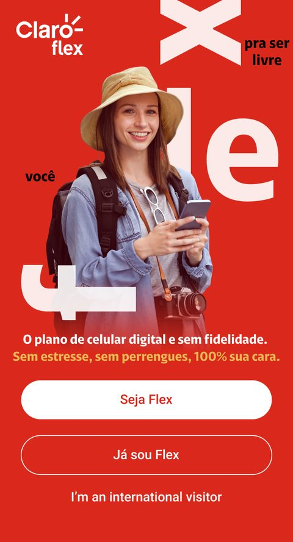
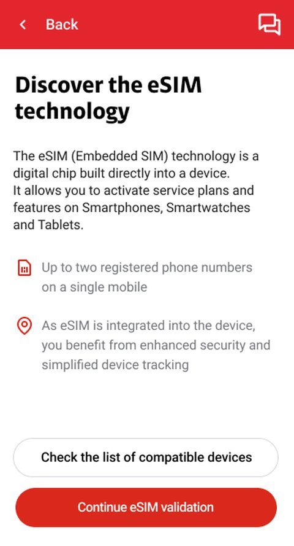
Escolha do plano
Planos de 30, 60 e 90 dias, sem fidelidade, com resumo claro antes de pagar.
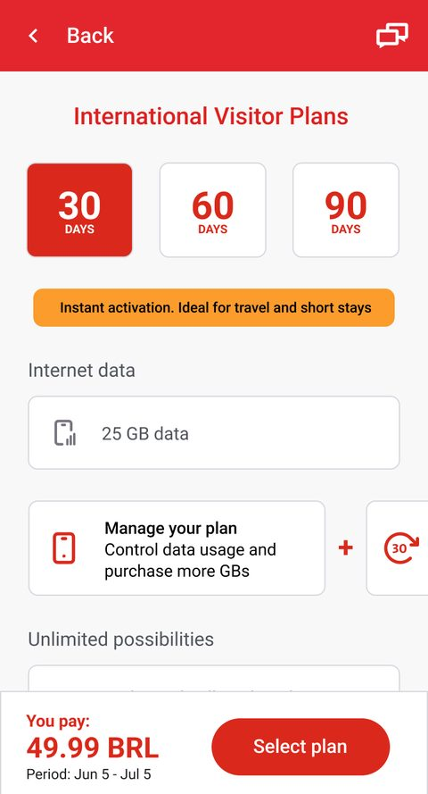
Cadastro com passaporte
Login e verificação pensados para quem não tem CPF.
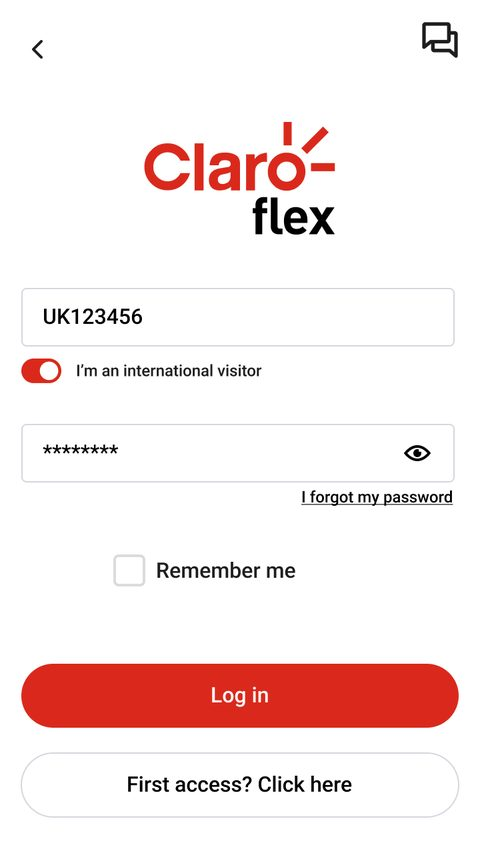
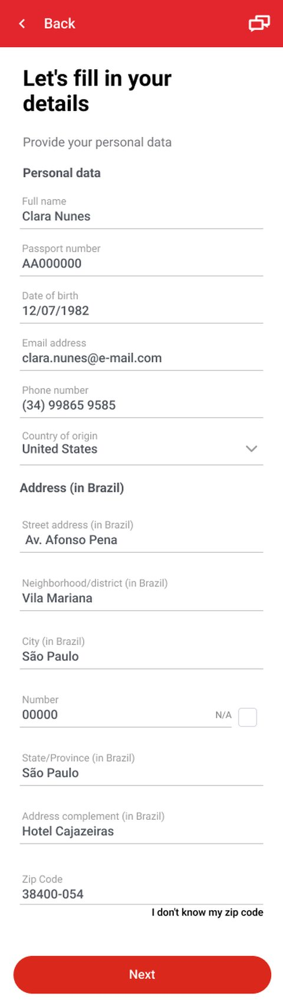
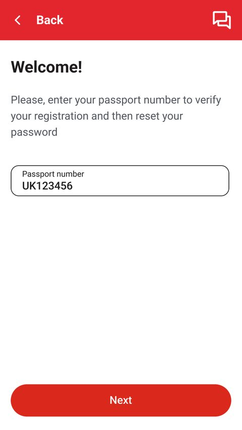
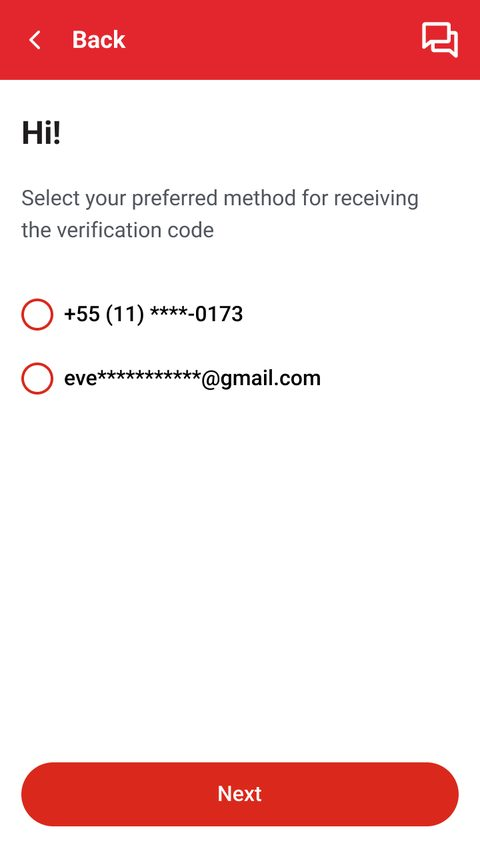
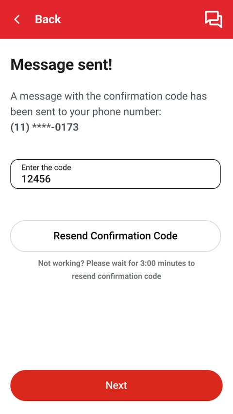
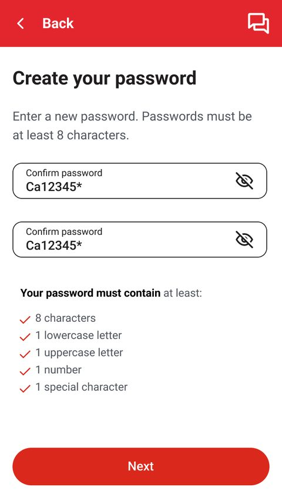
Pagamento
Cartão internacional com autenticação do banco (3DS).
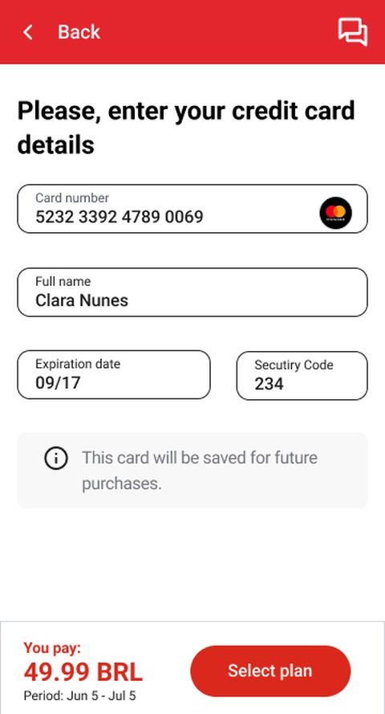
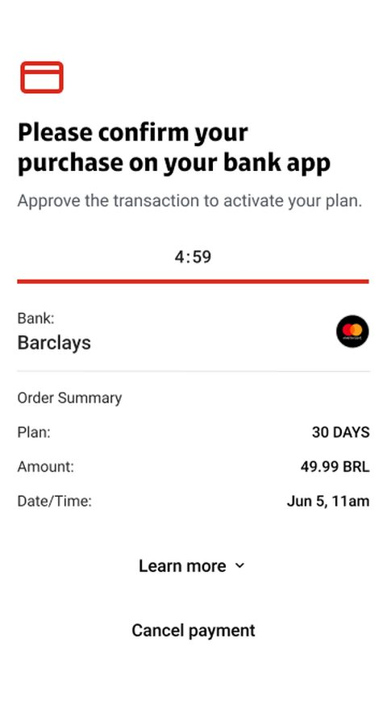
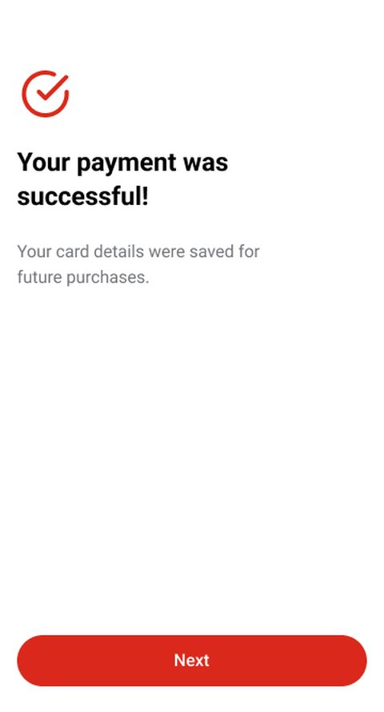
Ativação do eSIM
Do aparelho compatível ao número pronto pra usar.
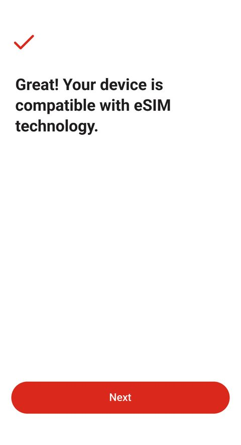
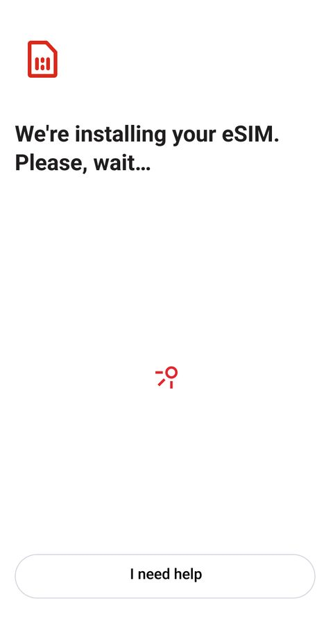
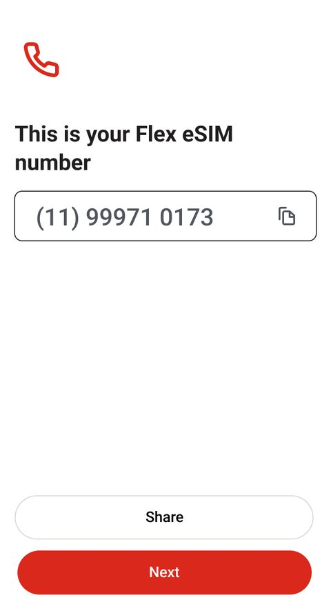
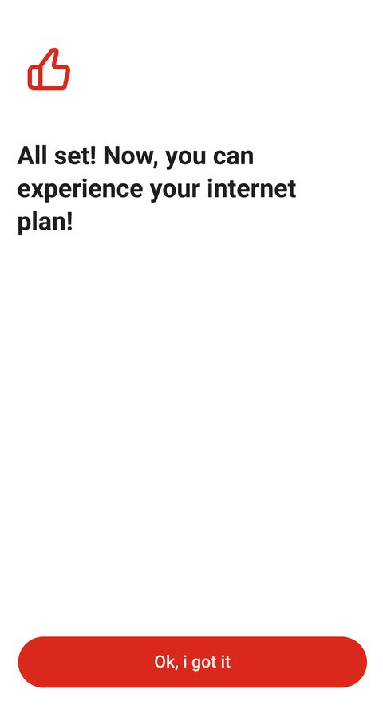
Onboarding e uso
Primeiros passos e acompanhamento do consumo.
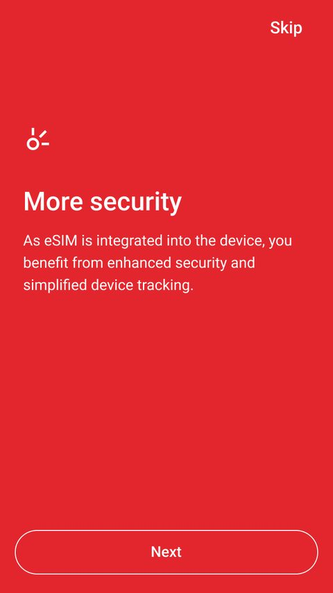
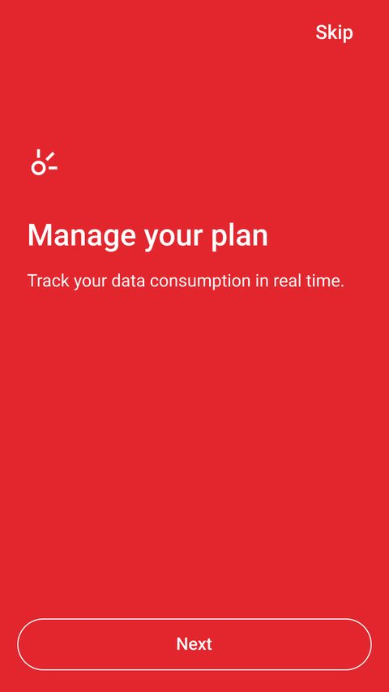
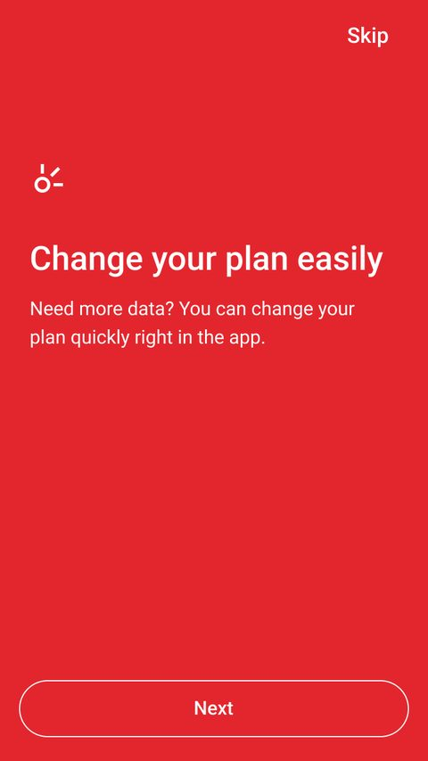
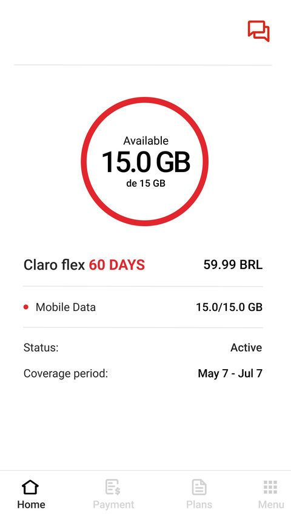
Telas do produto, seguindo o design system da Claro, com dados fictícios de exemplo.
Resultado
Os testes revelaram fricção na compreensão dos planos, principalmente na lógica de renovação automática. Isso levou a ajustes nas telas de planos e a uma recomendação de produto para viagens curtas. A jornada foi ao ar.
Metodologia
🔒 Dados de participantes anonimizados por confidencialidade.